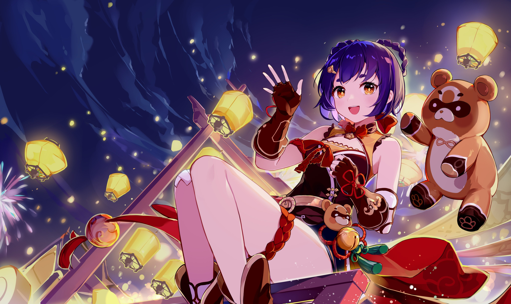
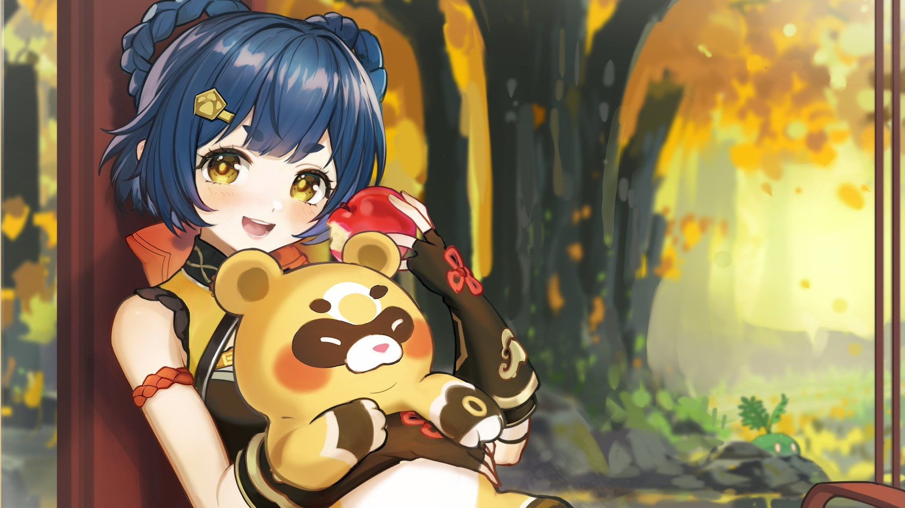

Xiangling Guide
Xiangling is a Pyro Polearm Character that specializes as a Sub DPS.
Overview
Xiangling is popular because she is an easy character to use. She requires little investment, you can get her for free, and she dishes out a ton of Pyro damage.

Elemental Skill: Guoba Attack!
Casting Xiangling’s Elemental Skill summons Guoba the Panda. After 2 seconds, Guoba starts breathing fire at an opponent, dealing AoE Pyro DMG every 1.5 seconds 4 times.
Xiangling’s Skill is her second most important talent to level. A single hit from Guoba does about as much damage as a single hit from Pyronado, but he has the disadvantage of being stuck wherever you drop him, and a tendency to mistarget even when he should be within range of an enemy. Guoba’s summon can be dash canceled, and should be in rotations that are limited by Xiangling’s Skill cooldown.
Elemental Burst: Pyronado
Displaying her mastery over both fire and polearms, Xiangling sends a Pyronado whirling around her. The Pyronado will move with your character for the ability's duration, dealing Pyro DMG to all opponents in its path.
This is the most important part of Xiangling’s kit, and the number one priority for leveling. Pyronado deals substantial AoE damage, and good management of snapshotted buffs and reactions can push that damage even further.
Constellations
C1: Crispy Outside, Tender Inside
Good constellation to have; more impactful in teams without access to other forms of Pyro Res shred like Viridescent Venerer.
C2: Oil Meets Fire
In combat, you will rarely finish your NA sequence, and C2 does nothing to incentivize changing this- her C2 multiplier is relatively low compared to Guoba or Pyronado, it brings the potential to steal Vapes from them, and triggering it requires taking valuable field time away from other team members.
C3: Deep Fry
+3 to her Burst, incredible increase in damage, makes her much stronger.
C4: Slow Bake
By far Xiangling’s best constellation in any team. A strong improvement even with Childe where not all additional swings can be vaped in a standard rotation, a stronger improvement in teams without uptime/downtime patterns like with Xingqiu or in pure Pyro, and even stronger still in reverse Melt teams where it improves not just her own damage but also her capacity as an aura enabler.
C5: Guoba Mad
+3 to her Skill. Guoba's happy, so I'm happy. Levels never hurt.
C6: Condensed Pyronado
A relatively lackluster Constellation for Xiangling’s own damage, but the team buff is appreciated in pure Pyro teams and in quickswap reverse Melt teams where Bennett is contributing damage. Pyronado does not snapshot its own bonus, but the third hit of her initial round up swings can receive the bonus and Guoba can in a Burst to Skill rotation.
Teams
Xiangling is one of the most flexible supports in the game, but she does require a battery to effectively use her.
Xiangling + Xingqiu + Bennett
Xiangling + Childe + Bennett


Xiangling + Kokomi + Bennett
Xiangling + Sucrose + Fischl